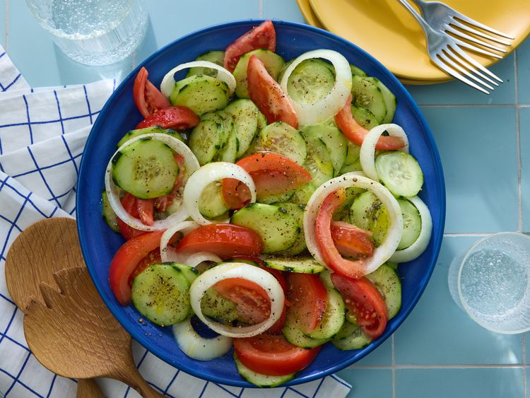

Cucumber Tomato Salad

Description
This refreshing cucumber tomato salad made with sliced cucumber, juicy tomatoes, and onion tossed in a sweet and
tangy vinaigrette is easy to prepare, has tons of flavor, and is perfect for a warm summer day.
Ingredients
- Cucumbers
- Tomatoes
- Onions
- Vinegar
- Oil
Steps
- Gather all ingredients.
- Whisk water, vinegar, oil, sugar, salt, and pepper together in a large bowl until smooth.
- Add cucumbers, tomatoes, and onion and stir to coat.
- Cover bowl with plastic wrap; refrigerate for at least 2 hours for best flavor results.
- Enjoy!
Back to main page